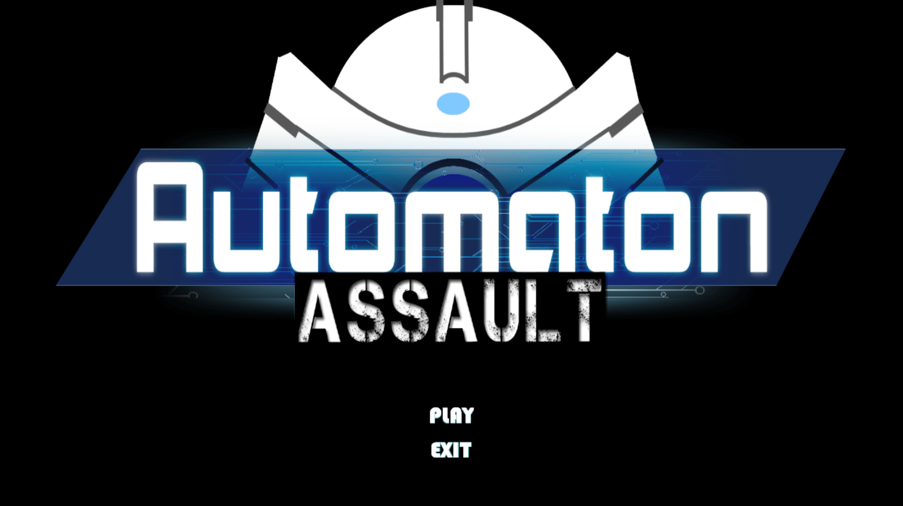

Galería


Coopera contigo mismo y supera todo tipo de desafíos
El nombre clave es RY, un robot automata capaz de aprender por si mismo. Aparte de tener dominar sus habilidades motrices para pasar por plataformas deberá de aprender a poder usar su mecanismo más poderoso, el sistema de auto-iteración, el cual le permite replicarse a sí mismo para completar tareas que no podría realizar por sí solo.
Cooperar contigo mismo jamas fue tan primordial. Avanza por los obstaculos obteniendo tu propia ayuda del pasado, juega, experimenta y repitete a ti mismo para progresar por todo tipo de pruebas.